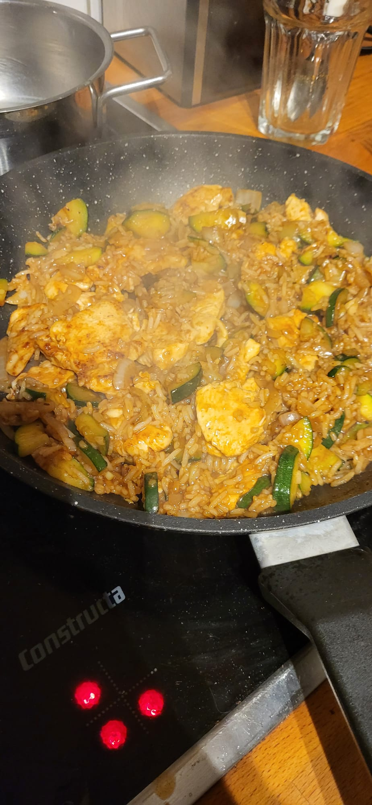

Home
Honey Garlic Chicken

Description
Delicious honey garlic chicken rice pan. Made in about 20 minutes.
Macros:
- Calories: 582
- Carbs: 66g
- Protein: 49g
- Fats: 13g
Ingredients for 1 serving:
- 1chicken breast or 180g
- 125ginstant rice or 50g raw rice
- 200gzucchini
- 1medium onion or 50g
- 2cloves of garlic
- 20gsoy sauce
- 15ghoney
- 5gbalsamic vinegar creme
- 1g cornstarch
- 1g garlic powder
- 0.5g chili powder
- 4g oil
- Salt and black pepper
Directions:
Cooking times may vary depending on your pan heat.
- Cut chicken into thin strips, add chili powder, garlic powder and black pepper on top and mix. Dice the zucchini and onion. Peel and grate the garlic cloves.
- Combine in a glass soy sauce, honey, balsamic vinegar creme, black pepper, chili powder and cornstarch. Mix until combined.
- Add oil to pan on medium heat, add the zucchini with a pinch of salt. Fry the zucchini for 2 minutes.
- Add another bit of oil and add the onion and keep frying for another 2 minutes.
- Push the vegetables aside and add some more oil. Now go in with the chicken and seperate it with a spatula.
- After 1 minute or when it is brown flip the chicken. Repeat for other side. Add a bit more oil and now add the minced garlic and fry for 15 seconds.
- Push mushrooms to the side of the pan and add another touch of oil and fry the chicken for 1-1:30 minutes on each side until they get color.
- Add in grated garlic for 30 seconds. Add in the sauce and let it simmer for 2 minutes until it thickens.
- Add rice and the sauce and combine everything. Fry for another 30 seconds. Done!